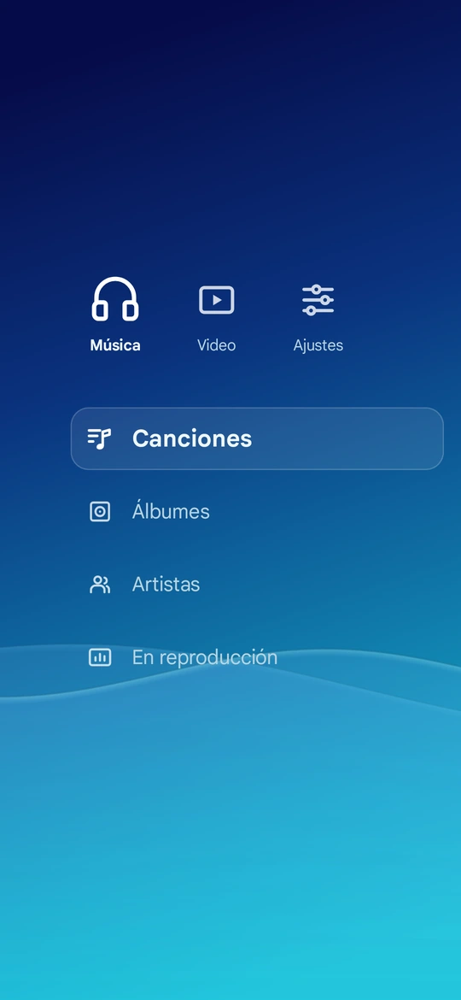

VISTA ACTUAL
Inicio · Música
01 Original captura del Redmi 9T

02 UI HTML/CSS sin capturas · navegación por gestos
Desliza a la izquierda para regresar · arriba/abajo para elegir
Los botones de fondo y tarjeta actualizan la propuesta web. Cuando no hay una captura real de esa combinación, la columna original conserva la captura de referencia y lo indica. La columna derecha está construida con HTML, CSS y vectores SVG editables; no usa capturas ni imágenes de fondo. El motor Android Canvas mantiene su implementación nativa.